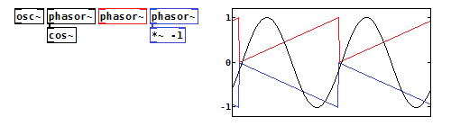
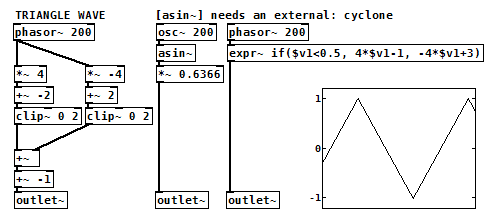
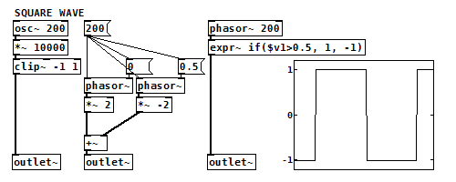
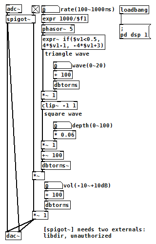

LFO/トレモロ（Pure Data パッチ）
2017年10月05日 カテゴリー：Pure Data
Pure Data(Pd)では、[osc~]で余弦波、[phasor~]でノコギリ波を発生させることができます。[cos~]はコサインを計算しますが、[phasor~]と組み合わせて余弦波を発生させるために使う場合があります。[phasor~]は0から1へ上がる形なので、-1をかければ0から-1へ下がる形になります。

＜三角波（Triangle Wave）＞
エフェクターに使われるLFO(Low Frequency Oscillator)は三角波が多いようです。Pdでは[phasor~]等を組み合わせることになります。

3パターン示していますが、結局[expr~]が一番楽な気がします。
＜矩形波（Square Wave）＞
あまり使わなさそうですが、一応3パターン示しています。

三角波を使い普通のトレモロを作りました。waveコントロールは、三角波を増幅してクリップすることで矩形波へと近づける仕組みになっています。
（このパッチをダウンロード）
三角波は直線的な数値変化ですが、[dbtorms~]を入れることで指数的な倍率変化による音量操作となるようにしています。